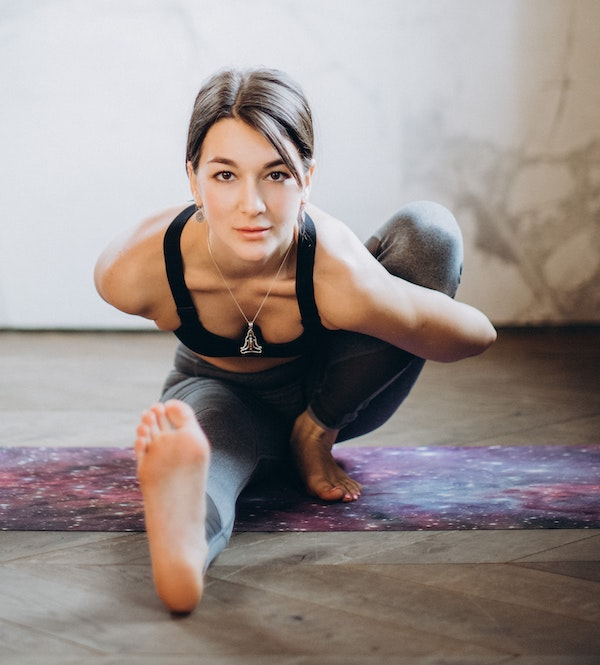

left-right symmetric
the leg on the ground is stretched out straight. The body is twisted towards the side with the bent leg, and again the arms are clasped behind the back and around the raised knee
https://en.wikipedia.org/wiki/Marichyasana

source: Yoga Journal